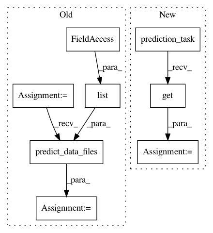

f3207032063ae7156dc68df5c3dcd21fec0b48ca,cesium/tests/test_predict.py,,test_predict_classification,#,35
Before Change
for model_type in classifier_types:
model = build_model.build_model_from_featureset(fset,
model_type=model_type)
preds = predict.predict_data_files(TS_CLASS_PATHS,
list(fset.data_vars), model,
custom_features_script=None)
if preds.prediction.values.ravel()[0].dtype == np.dtype("float"):
assert(all(preds.prediction.class_label == [b"class1", b"class2",
b"class3"]))
assert(preds.prediction.values.shape ==
After Change
for model_type in classifier_types:
model = build_model.build_model_from_featureset(fset,
model_type=model_type)
preds = prediction_task(TS_CLASS_PATHS, list(fset.data_vars), model,
custom_features_script=None)().get()
if preds.prediction.values.ravel()[0].dtype == np.dtype("float"):
assert(all(preds.prediction.class_label == [b"class1", b"class2",
b"class3"]))
assert(preds.prediction.values.shape ==
In pattern: SUPERPATTERN
Frequency: 3
Non-data size: 8
Instances
Project Name: cesium-ml/cesium
Commit Name: f3207032063ae7156dc68df5c3dcd21fec0b48ca
Time: 2016-07-07
Author: brettnaul@gmail.com
File Name: cesium/tests/test_predict.py
Class Name:
Method Name: test_predict_classification
Project Name: cesium-ml/cesium
Commit Name: f3207032063ae7156dc68df5c3dcd21fec0b48ca
Time: 2016-07-07
Author: brettnaul@gmail.com
File Name: cesium/tests/test_predict.py
Class Name:
Method Name: test_predict_regression
Project Name: cesium-ml/cesium
Commit Name: f3207032063ae7156dc68df5c3dcd21fec0b48ca
Time: 2016-07-07
Author: brettnaul@gmail.com
File Name: cesium/tests/test_predict.py
Class Name:
Method Name: test_predict_optimized_model